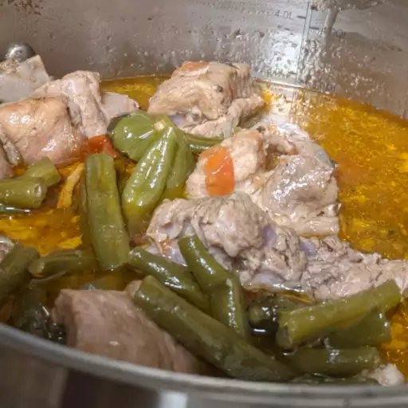

Pork Sinigang

Description
Sinigang is a Filipino soup cooked with pork. Serve with rice and for additional sauce, use soy or fish sauce.
Ingredients
- 1 tablespoon vegetable oi
- 1 small onion, chopped
- 1 teaspoon salt
- 1 (1/2 inch) piece fresh ginger, chopped
- 2 plum tomatoes, cut into 1/2-inch dice
- 1 pound bone-in pork chops
- 4 cups water, more if needed
- 1 (1.41 ounce) package tamarind soup base (such as Knorr®)
- ½ pound fresh green beans, trimmed
Home